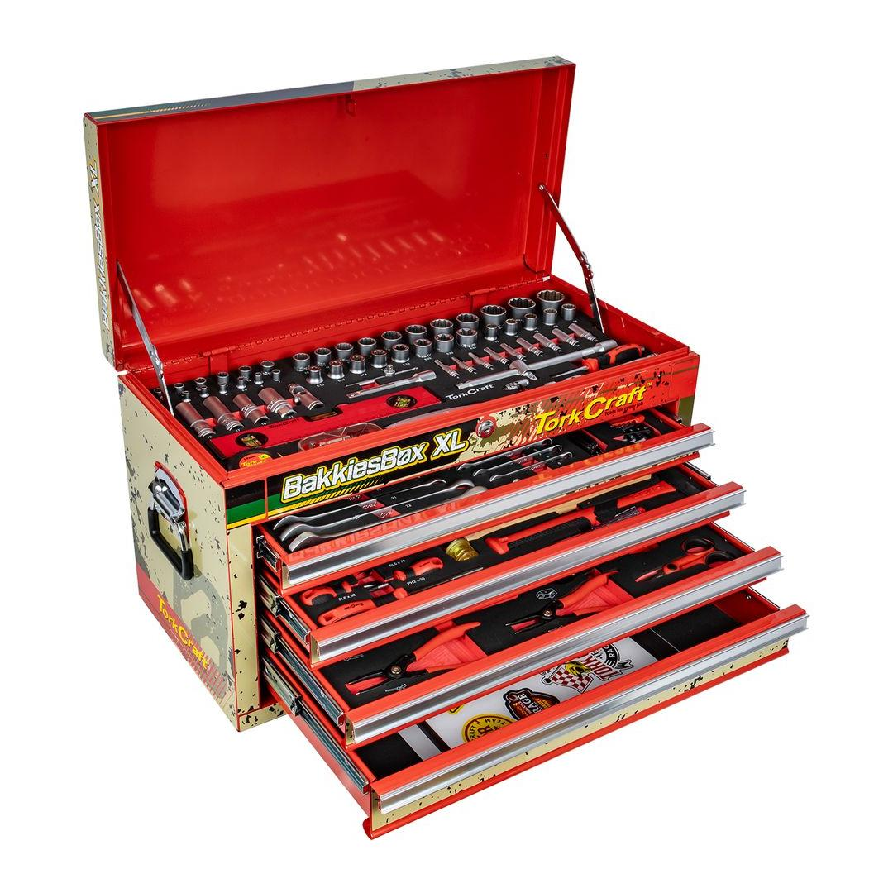
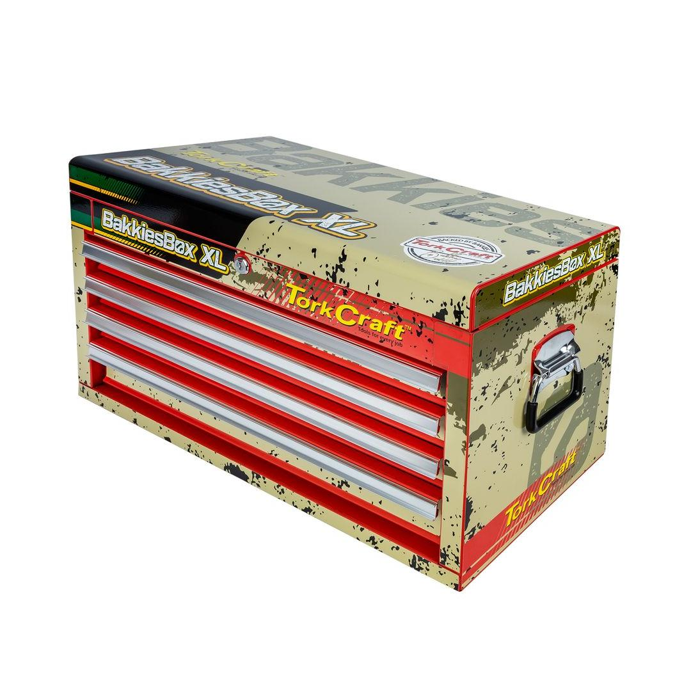
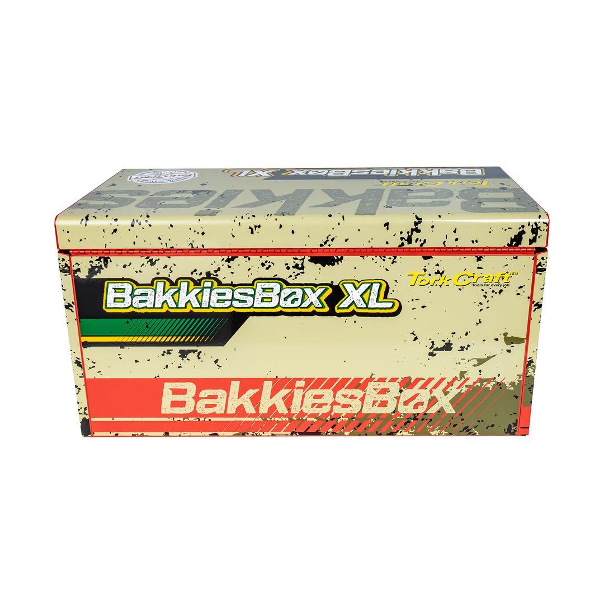

TCTB254LTD
15584.23



Drawers: 4
Dimensions: 660(L) x 310(W) x 380(H)mm
Classification: Standard (Yellow)
The Top Tool Box 254PC 4 Drawer 660(L) x 310(W) x 380(H)mm Pro Box Bakkies XL is not just a tool chest—it&s a tribute to strength and precision, created in collaboration with legendary rugby powerhouse, Bakkies Botha. This professional-grade top box is designed to meet the demanding standards of a world-class athlete and serious craftsman.
It is built with durable all-steel components, featuring a robust 0.7mm body and 0.6mm drawer thickness, ensuring it can handle any challenge thrown its way. Measuring a substantial 660mm (L) x 310mm (W) x 380mm (H), it provides exceptional storage capacity, reflecting the hard-hitting quality Bakkies Botha is known for.
Organizing your essentials is effortless across its layout. It includes four spacious, lockable drawers and a convenient top tray accessible under the hinged lid. The drawers operate smoothly on 35mm ball-bearing telescopic slides, guaranteeing full, easy access to all your tools.
The standout feature is the 254-piece integrated tool set. This comprehensive collection comprises a wide array of high-quality Chrome Vanadium (Cr-V) sockets, spanners, and hand tools. All components are precisely organized within EVA foam inserts, providing an organized and ready-to-use collection. Complete with a comfortable carry handle and secure locking mechanisms, this Bakkies XL tool box is the ultimate choice for those who demand organization, reliability, and the toughness of a rugby champion.
Application: